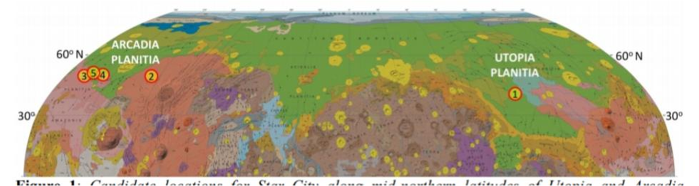
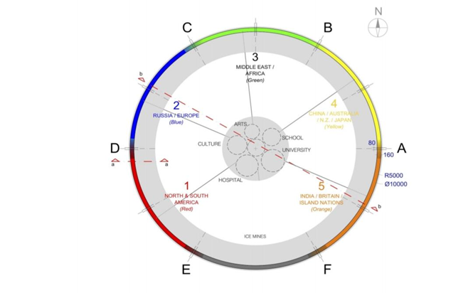
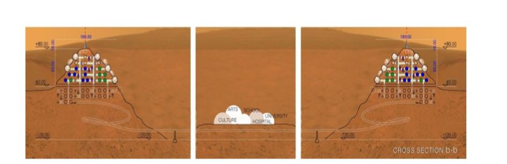
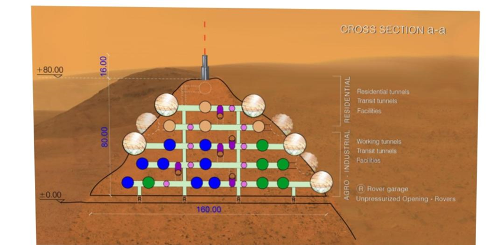
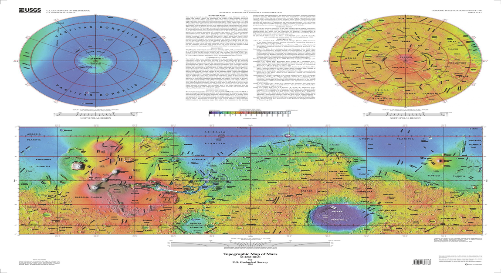

Map of our Martian City
The Martian City Concept
“If we want to put humans on Mars, we’ll need humans on Mars.” Star City exports Hope, Promise and Know-How. The Star City Guild builds new cities on Mars, inspires millions of young people who watch Star City’s blinking lasers from their backyard telescopes and trains leaders who return to Earth to rebuild devastated communities. If humans from all around the world can work together to build cities on Mars, where even the air we breathe must be made in a machine, they can inspire the rest of us to work together to make our Planet Earth a better place for all. The New Space companies are in the transportation business, moving people and equipment between Earth and Mars. The Star City Development Guild (“the Guild”) are the experts who can build anything on Mars, from a small dome to a complete town for thousands of people. With their fleet of mobile nuclear reactors and heavy roadheaders, their extensive industrial base, and above all their know- how and expertise, the Guild earns enough from the Mars construction and outfitting business to pay for the necessary imports of advanced high-tech parts and spares.
Site selection for martial city

We have reviewed the USGS maps of Mars NASA’s Human Landing Sites workshops and also its ongoing project for Subsurface Water Ice Mapping (SWIM). In producing a shortlist of regions suitable for Star City, the criteria were: in Northern Hemisphere; low altitude for safer landings; abundance of shallow subsurface water ice deposits; rock quality suitable for tunneling and supporting tunnels; suitable landforms for tunneling inside mesas or crater walls; availability of other critical resources such as metals, silicates, sulfates etc. and proximity to areas of scientific interest and natural beauty. Tunneling in competent rock formations is used for the construction of the majority of the habitable volume
Animated 3D Map of Martian City
Map Of Martiancity by Sanket Shivale
Our Martian city map are divided into 5 regions for sutible Arrangement
1st region ( urban city )2nd region (launching and landing site)
- Columbia Hills
- Eberswalde
- Jezero Crater
- Mawrth Vallis etc
This is the region where new and all harmful experiment take place. So it is away from human colony for protection reason
4th region ( Government office)5th region ( whether and Atmosphere controls office)
Colony Urban Concept
Star City can be constructed in craters of diameter from 2km - 10km. The scheme presented in Fig. 3 below has been fitted to a 10km crater located in Utopia Planitia at 40.8N, 99.5E, altitude -4,000 meters, but can be adapted for other craters. The site first receives power, ISRU and heavy equipment in the 2029 window. Two Starships by SpaceX with 30 passengers each land near the site. Each of the two Starships carries five teams of six persons, one from each of the five continental groupings. Thus, there are 12 founders of the “red” sector 1 village in Figure 3 below, 12 founders of the “blue” sector 2 village, and so on. In all, the first 60 persons on Mars start five villages simultaneously. By the time more people and equipment arrive and the villages continue to expand their habitable volume perimetrically along the crater wall, until they merge to form Star City. All tunnel tailings are mined for water ice and useful resources such as metals and silicates, while the north-facing inside wall of the crater is reserved for supplemental water ice mining.

Urban plan of Star City. Each of the five founding villages grows perimetrically along the crater wall. The villages are connected by transportation and services tunnels so they can share people and resources and come to each other’s aid. As Star City grows, the five villages merge into a city with five culturally distinct neighborhoods. At some point, once they can afford it, they pool their resources to build facilities for arts, culture, school, a university and a hospital at the center of the crater.

Cross sectional view b-b. The five villages have panoramic views of each other across the crater, and of the Martian horizon. Each village is self-sufficient, with its own power generation and backup power system, and its own aquaponics and industrial zones. Each of the five villages is tackling the same survival challenges in their own way, and in a contingency or emergency, each can rely on help from the other four.

Cross sectional view a-a. The residential tunnels and domes are located along the top of the crater wall, with panoramic views from the domes to the other four villages or to the distant horizon. Rover access is at ground level of the surrounding plains, with unpressurized rover garages situated directly below the agro-industrial tunnels.
The Economy of Star City

Overview of Economic Concept The central economic motivation for the consortium of investors is to establish Star City Development Guild as the lowest cost provider for construction of habitable outposts on Mars and to thereby reap an economic benefit by selling the establishment of other outposts to second-movers. This space is already being actively monitored, as evidenced by the space interests of decidedly non-space companies like Caterpillar, Obayashi and Kajima and of professional firms like Foster + Partners and SOM. This would not normally be a viable business model, except that a new space race is under way. Major powers and/or well-funded private corporations have clearly and repeatedly declared their intent to return humans to other worlds and to create permanent settlements there.

Question & Answers
1. What are some challenges to colonizing Mars?Difficulties and hazards include radiation exposure during a trip to Mars and on its surface, toxic soil, low gravity, the isolation that accompanies Mars' distance from Earth, a lack of water, and cold temperatures.
2. Why we choices mars for colonization ?
After the Earth, Mars is the most habitable planet in our solar
system due to several reasons:
Its soil contains water to extract
It isn’t too cold or too hot
There is enough sunlight to use solar panels
Gravity on Mars is 38% that of our Earth's, which is believed by
many to be sufficient for the human body to adapt to
It has an atmosphere (albeit a thin one) that offers protection
from cosmic and the Sun's radiation
The day/night rhythm is very similar to ours here on Earth: a
Mars day is 24 hours, 39 minutes and 35 seconds
Scientists have found that some Earth microbes could survive on Mars temporarily after testing several types of bacteria and fungi for their survival skills by launching them into Earth’s stratosphere on the MARSBOx (Microbes in Atmosphere for Radiation, and Biological Outcomes experiment) space balloon, since the conditions up there are the closest our planet has to Martian atmospheric conditions. There is even one that could laugh in the face of space radiation.